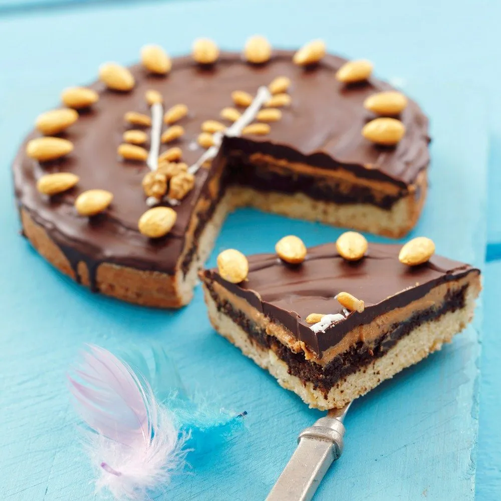

Description
Mazurek is a traditional Polish flat cake made in many homes for Easter. Many different toppings are possible.
Ingredients
- 2 1/2 cups flour
- 1/4 cup powdered sugar
- 200g (7 oz) butter
- 1 tablespoon 18% sour cream
- 2 egg yolks
- topping: for example orange jam from 4 oranges
- optional additional toppings/decorations:
- walnuts
- pecans
- raisins
- sliced almonds
Steps:
- Put flour and butter in a bowl.
- Cut the butter with a sharp knife into tiny pieces, mixing with the flour.
- Add egg yolks, sugar, sour cream, and a pinch of salt.
- Knead well and form into a ball. Wrap in plastic wrap and let chill in fridge for about an hour.
- Roll out flat and place in large baking sheet (this should be enough for a 25x35cm/10x14in sheet) on top of parchment paper.
- Make little holes with fork in the dough.
- Bake for 15-20 minutes in 200°C (395°F).
- Let cool before spreading topping.
- Decorate with nuts or other toppings.